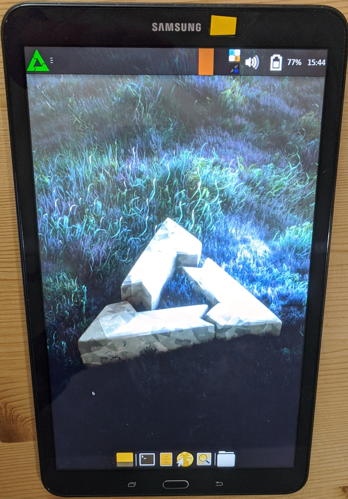

Samsung Galaxy Tab A 2016 (SM-T580)
Jump to navigation
Jump to search
|
 Samsung Galaxy Tab A 2016 running XFCE4 on postmarketOS | |
| Manufacturer | Samsung |
|---|---|
| Name | Galaxy Tab A 2016 (SM-T580) |
| Codename | samsung-gtaxlwifi |
| Released | 2016 |
| Category | testing |
| Original software | Android 6, upgradable to Android 8.1 |
| postmarketOS kernel | 3.18.140 |
| Hardware | |
| Chipset | Exynos 7870 |
| CPU | 1.6GHz Octa-Core (Cortex-A53) |
| GPU | Mali-T830 MP1 |
| Display | 1920 x 1200 LCD |
| Storage | 16GB |
| Memory | 2GB |
| Architecture | aarch64 |
{kind=link}
| USB Networking |
Works
|
|---|---|
| Flashing |
Partial
|
| Touchscreen |
Works
|
| Display |
Works
|
| WiFi |
Broken
|
| FDE | |
| Mainline |
Broken
|
| Battery | |
| 3D Acceleration | |
| Audio | |
| Bluetooth | |
| Camera |
Broken
|
| GPS |
Unavailable
|
| Mobile data |
Unavailable
|
| SMS |
Unavailable
|
| Calls |
Unavailable
|
| USB OTG | |
| NFC |
Unavailable
|
| Accelerometer | |
|---|---|
| Magnetometer | |
| Ambient Light | |
| Proximity | |
| Hall Effect | |
| Ir TX |
Unavailable
|
|---|---|
| TrustZone | |
Contributors
- Tim453
Users owning this device
- Sputnik1973 (Notes: A couple of scratches, but good conditon in general, running LienageOS 18.1.)
- TryzenAlpensky (Notes: Currently Running crdroid Android 12.)
- Veast (Notes: Unable to install due to heimdall not flashing TWRP)
Install TWRP
- Dowload the TWRP image for gtaxlwifi
- Press
Volume down+home+powerto enter Download mode - Flash the Recovery
$ heimdall flash --RECOVERY twrp-3.6.0_9-0-gtaxlwifi.img
To boot into TWRP press Volume up + home + power
Installation
| Flashing with heimdall gets stuck, so adb sideloading has to be used. |
Install from the recovery zip installer
- Install TWRP on your device
- Configure the image
| Weston does not launch, XFCE4 and Plasma-Mobile work |
If a UI is used the following additional package has to be added during pmbootstrap init msm-fb-refresher
|
$ pmbootstrap init
- Prepare the installation
$ pmbootstrap install --android-recovery-zip
- In TWRP go to Advanced->Sideload and flash the image on the tablet
$ pmbootstrap flasher --method=adb sideload
See also
- pmaports!2796 Initial merge request
- Device package
- Kernel package